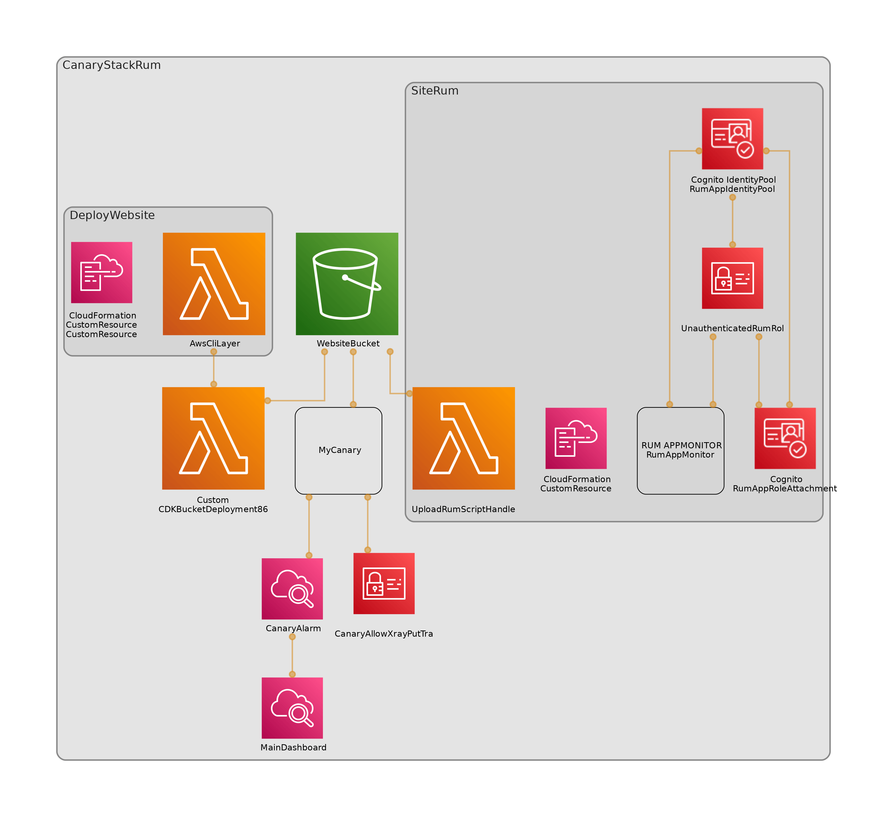
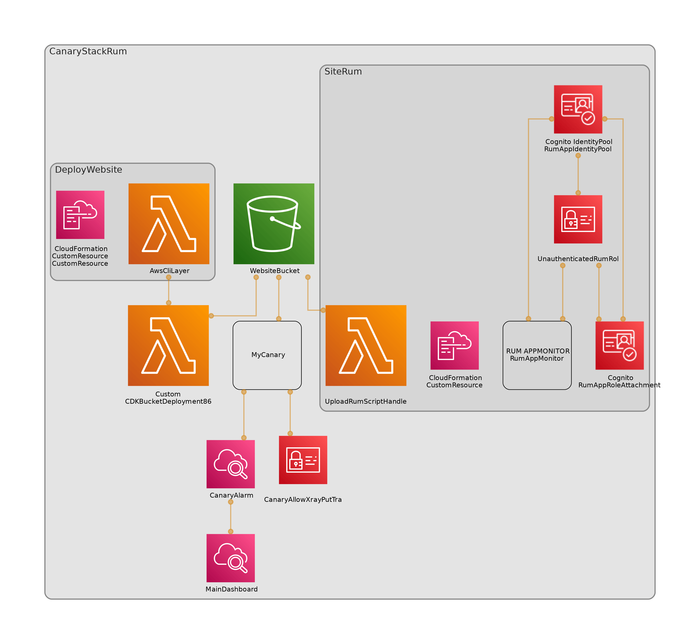

Welcome to the canary stack
This is a simple single page website that show cases the aws-cdk. The architecture below is created automatically by cdk-dia.
This is a simple single page website that show cases the aws-cdk. The architecture below is created automatically by cdk-dia.
